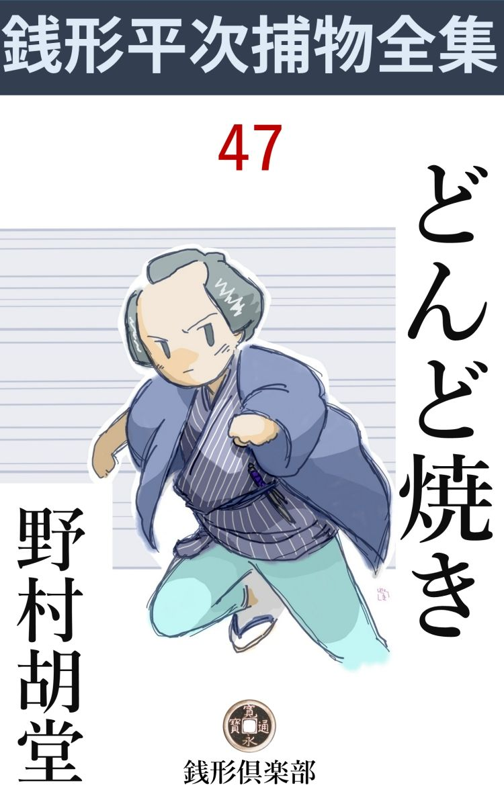
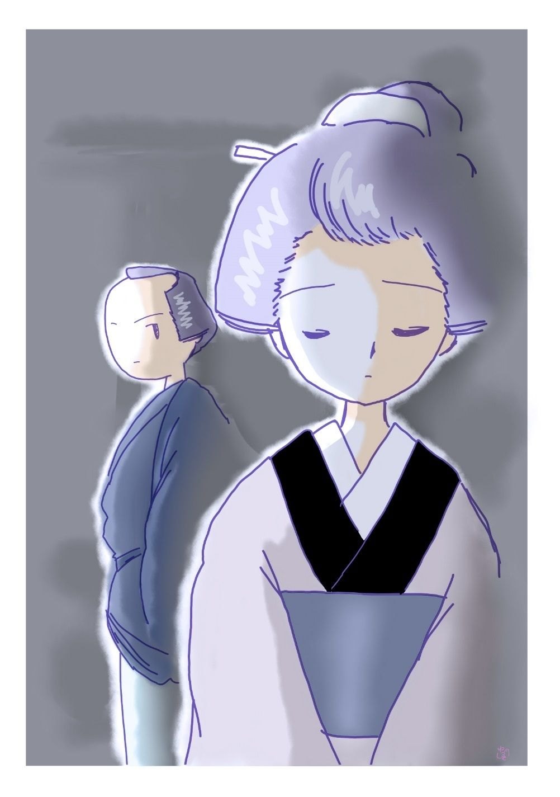

| どんど焼: 銭形平次捕物全集第47話 (銭形倶楽部) | |
| 野村胡堂 | |
| ZENIGATA CLUB (2018) | |

一
「あ、あ、あ、あ、あ」
ガラッ八の八五郎は咽喉仏 の見えるような 大欠伸 をしました。
「何と言う色気のない顔をするんだ。縁先で遊んでいた白 犬 が逃出したじゃないか、手前 に喰いつかれると思ったんだろう」
のんびりした春の陽ざしの中に、銭形平次も年始疲れの、少し奈 良 漬 臭くなった足腰を伸ばして、寝そべったまま煙草の烟 の行方を眺めていたのです。
「だがね、親分、正月も三ガ日となると退屈だね。金はなし、遊び相手はなし、御用はなし、------そこで考えたんだが、二度年始廻りをする術 はないものでしょうか------明けましてお目出とう、おや八さん、昨日も年始に来たじゃないか、へエー、そんな筈はないんだが、あっしは暮から風 邪 を引いて今日起き出したばかりですよ、それは多分八五郎の偽者でしょう------なんて上り込む工夫はないものかな」
八五郎の想像 は、会話入りで際限もなく発展して行きます。
「馬鹿野郎、------よくもそんな間抜けな事が考えられたものだ」
「------それも樽 を据えた家に限るね、一升買いの酒じゃ、飲んでも身にならねえ」
「呆れた野郎だ」
「でなきゃア、御用始めに、眼の玉のでんぐり返るような捕物はないものかなア。親分の前 だが、今年こそ、うんと働きますぜ。江戸中の悪党が、八五郎の名を聞いただけで眼を廻す------てな事になると------」
「八、気を付けるがいいぜ、雪のない正月で、いやにポカポカするから」
「ね、親分、今度はあっし に任せて下さいな、どんな事でも、一人で捌 いて世間の人をアッと言わせますから」
「いい気のものだ、------おや、そう言えば御用始めらしいぜ、手前逢って見るか」
平次が隣室 に隠れる間もありません。バタバタと入って来たのは、若い男。
「銭形の親分さん、た、大変、------すぐお出で下さい」
突きのめされそうな声です。二十五六、大店 の手代風ですが、よほど面くらったものと見えて、履 物 も片跛 、着物の前もろくに合っておりません。
「お前さんは、どこから来なすったえ」
八五郎は精一杯の威 儀 を作ります。
「安針 町の、さ、相模屋 からめえりましたが、------わ、若旦那が昨夜------」
手代はゴクリと固唾を呑みました。
「これを飲んで少し落着いてから話すがいい。そうあわてちゃ却って筋が通らねえ」
平次がぬるい茶を一杯くんで出すと、それを一と息に呑みほして、暫くホッと胸を撫でおろします。
「若旦那がどうした------」
と平次。
「昨夜殺されましたよ」
手代はぞっと身を顫わせます。
「昨夜殺されたと、何だって今頃あわてて飛んで来るんだ。あの辺は第一、小網町 の仙太の縄張じゃないか」
ガラッ八は少しむくれ て見せました。
「そう言うな、八、------ね番頭さん、お前さんが下手人の、疑いを受けたんだろう」
「えッ、どうしてそれを、親分さん」
「昨夜の殺 しを、今頃あわてて俺のところへ言って来るのは、よくよく困ったことがあるからだろう」
平次は落着いた調子で図星を指します。
「小網町の親分が、------一人も外へ出ちゃならねえ、世間の口にのぼる前に、下手人を捜し出すから------って」
「仙太兄哥のやりそうなことだ、------ところでどんな事になっているんだ、詳しく話して見るがいい、次第によっちゃ、------お前 さんが本当の無実なら力になって上げないものでもない」
「有難う存じます、------私は相模屋の手代の与 母 吉 と申しますが、災難はどこに転がっているかわかりません。こう言うわけで------」
手代の与母吉はようやく落着いて話し始めました。
二
安針町の相模屋の若旦那の勘次郎は、正月二日の晩、離屋 のようになっている別棟の二階六畳の部屋で、小型の出刃庖丁 に喉笛を刺され、冷たくなっているのを、嫁のお清が見つけ、大変な騒ぎになりましたが、小網町の仙太が駆けつけ、内々検 屍 だけを済ませて、厳重に口止めをしたまま、下手人の探索を続けているのでした。
勘次郎は二十三になったばかり、日本橋業平 と言われた好い男で、ずいぶん罪も作った様子ですが、一年前に遠縁のお清を嫁に貰ってから、これが思いの外の気象者で、巧 みに勘次郎の浮気を封じ、大した噂もなく過しておりました。
「近頃は、女出入では人に怨まれるような筋はございません。------そこで仙太親分は、若旦那と一緒に育って、お清さんに思いを掛けたことのある私が、怪しいと、睨みなすったわけで------」
与 母 吉 は泣き出しそうでした。
「それは、どんな御用聞でも考える筋だ、------ところで、お前さんは今嫁のお清さんを何とも思っちゃいないのか」
平次は要領の捜 りを一本入れました。
「思わないわけじゃ御座いませんが、主人の嫁ではどうにもなりません。お清さんが行儀見習で、相模屋に三年もいたんですから、昔思いをかけたのが怪しいと言えば、店中潔白なのは一人もありません」
「なるほどな」
「もっとも、三ガ日は休みも同様で、ゆうべ店にいたのは私と小僧の寅松と二人きり、納屋の方には人足が二三人いたようですが、これは棟 が違いますから、裏からこっそり入って、若旦那を殺してそっと帰るわけには参りません」
「親旦那や、下女がいるだろう」
「御親類の方が年始に見えて、親旦那はそれを相手に、奥で飲んでいらっしゃいました。夕方から酒が始まって、お客の帰ったのは亥 刻 頃、------お清さんがそれから間もなく、若旦那の殺されているのを見つけたので御座います」
「奉公人は？」
「みんな出払って、店には私と寅松だけ、嫁のお清さんは客の相手で、お勝手には飯炊きのお熊どんと行儀見習に下田の取引先から来ているお浜さんが、燗 をつけたり、料理の世話をしたり、一寸の暇もなく立働いていたそうでございます」
「殺された若旦那は、宵から二階などへ上がっていたのか------この節は御触れがやかましくて、町家の二階では灯 を点けてならぬことになっている筈だが------」
万 治 三年は正月から大火があって、湯島から小網町まで焼き払い、二月は人心不安のため将軍 日光 社参 延引 を令し、六月には大坂に雷震、火薬庫が爆発し、とうとう江戸町家の二階で紙燭 、油火 、蠟 燭 を禁じたのです。
「年始疲れと二日酔の気味で、日暮前から離屋の二階で休んでいました」
「その離屋は、母屋 の者に知れずに外から出入りが出来るかい」
「雨戸は酉刻 前に締めます。用心のやかましいお店ですから、外から離屋へ出入は出来ません」
「中にいる若旦那が開けてくれたら------」
「そんな事はございません、締りは内からしてありますし、若旦那は二階で殺されておりました」
「母屋からは？」
「三尺の廊下で続いております。土蔵の前を通って、これはわけもなく行けます」
与母吉の話で、大体の様子は判りますが、下手人の見当までは、銭形の平次でもつけようがなかったのです。
「八、------手前 一人で行って見るがいい、望み通り、眼の玉がでんぐり返るような話らしいぜ」
「へエ------」
そう言われてみると、八五郎も少しばかり不安がないでもありません。
「親分は？」
与母吉は不安らしく平次を顧みました。あまり賢そうに見えないガラッ八に委 ねるのが、何としても心配でならなかったのでしょう。
「俺が行っちゃ、仙太兄哥 に悪かろう。八五郎で手に負えなくなるまでは顔を出したくない」
「------」
与母吉は押してとも言いかねた様子で、ガラッ八と一緒に、安針町の店へ帰って行きました。
三
「番頭さん、どこへ行ったんだ、俺の言うことを聴かなきゃア、縄アつけて引立てなきゃならないが」
与母吉 の顔を見ると、仙太は以ての外の様子でこう極めつけました。その後から相模屋の敷居を跨 いだガラッ八は、厭も応もなく、それと顔を合せてしまったのです。
「小網町の親分、------これはあっし のせいだ、勘弁しておくんなさい」
「おや、銭形親分のところの、八五郎兄哥 か。大層鼻が良いようだが------」
仙太は苦り切ります。
「ツイ日本橋に用事があって来ると、そこで与母吉さんに逢ってネ、------なアに、前から少しばかり知っているんだ、------大層顔色が悪いから、どうしたのかと訊くと、こうこう------」
八五郎もなかなかうまい事を言うようになりました。
「うまく言うぜ------まアいい。どうせ銭形の兄哥にも来て貰おうかと思っているところだ。差し当り一の子分の八五郎兄哥の見込みを聴かして貰おうじゃないか、近頃は大した評判だぜ」
仙太は日本橋界隈を縄張にしておりますが、向う息の荒い割には気の良い男で、平次の腕には、及びもつかぬことをよく知っていたのです。
「それほどでもないが」
ガラッ八は長い頤 を撫でます。
店には二三人の番頭がおりますが、それはゆうべの事件とは関係のない者ばかり、宵の行先は仙太の手で調べて、一人残らず解っておりますが、さすがに恐ろしい事件の圧 迫 感 で、青白く緊張した顔を見合せて、言葉少なに慎しんでおります。
「とんだ事でしたね、旦那」
奥で火鉢に頤を埋めるように、深々と思案に暮れているのは、主人の勘兵衛でした。まだ五十五六の働き者ですが、親一人子一人の伜を喪 って、さすがにがっかりしております。
「有難う御座います、------御苦労様で------」
「下手人の心当りはありませんか」
「それがあれば宜しいでしょうが------何分私は二た刻もお客の相手をしていましたんで------」
ガラッ八の恐ろしい愚問に舌を巻きながらも、商人らしく、勘兵衛は素直に相 槌 を打ちます。
小僧の寅松は庭を掃いておりましたが、これはやっと十二、人を殺す年でも柄でもありません。
「あれがお清さんとか言う？」
お勝手から出てきた若くて美しい女を、薄暗がりの中にガラッ八は指しました。
「いえ、お浜と言って、行儀見習に下田の取引先からきている娘ですよ」
勘兵衛は訂正 してくれます。そう言えば、美しさも、身扮 の整っているにも拘 らず、眉も歯も、娘姿に間違いはありません。
「下田から------？ いつ頃から来ていなさるんで」
「半歳ほど前でした、------十九の厄 で、年を越さないうちは嫁にもやれないから、暫らく江戸の水を呑ましてくれという親元の頼みでしてな」
勘兵衛はそう説明しているうちに、お浜は自分の噂に追われて身を細らせながら、奥の方へ消えます。そう言えば心持野暮ったいところはありますが、いかにも健康そうで、ハチ切れそうな美しい娘です。
「あれは間違いもなくお熊さんでしょう」
お勝手に居る四十恰好 のお熊さん------耳の少し遠いのをガラッ八はのぞくようにしました。
「もう十年も奉公しております、家の者も同様の女で------」
「お熊さん、ゆうべ離屋の二階へ行った人は誰と誰だい」
ガラッ八はもっともらしく訊ねました。
「御新造さんと、お浜さんが一度ずつ行ったようですよ。御新造さんは酉 刻 半 ごろ様子を見に行って、若旦那様が頭痛がすると仰しゃるんで、窓を開けて来なすったとかで、それから半刻ばかり経って、お浜さんが閉めに行きましたよ」
「二階の窓が開いていたのか？」
「開いていたって曲者の入れる気遣いはないぜ、梯子 があるなら知らず」
仙太はガラッ八の間抜けさを笑っている様子です。
「梯子を持って来て掛けたとしたら？」
「二階を見てからそんな事を言った方がいいよ。梯子なんか持って入られる場所じゃねえ、それに、雨戸はお浜さんが閉めて来たんだ、その時まで若旦那はピンピンしていたんだぜ」
そう言われると一句もありません。
「お浜さんが------」
ガラッ八はまだ腑に落ちないものがある様子ですが、
「お浜さんが一応疑われるわけさ、が、正面から喉 笛 へ突き立てた出刃が、後ろへ突き抜けるほど深く刺してあるんだぜ、全く恐ろしい力だ。誰が見たって、女や子供の手際とは思わないよ、------まさか、咽喉笛へ出刃を当てさしてよ、槌 で叩かせる者もあるめえ」
「なるほどね」
仙太の話を聞くと、お浜には少しの疑いも掛けていません。
「それに、正面からあれだけの事をやって、返り血を浴びない筈はない、------お浜の着物は残らず見たが、汚 点 一つないよ」
最後の止めを刺されながら、ガラッ八は離屋 に向いました。納戸の前から、土蔵の前を通って、三尺の廊下の尽きるところに、離屋の二階の登り口が開きます。
上には親類の年寄が二三人と、嫁のお清が、まだ入棺 も済まぬ死骸の前に、湿 っぽく坐って引っきりなしに線香を上げているのでした。
「御骨折で------有難う存じます」
お清はふり返ってガラッ八に挨拶しました。二 十 歳 と言うにしては少しふけておりますが、抜群のきりょう で、身体のひ弱さと反対に、気象はすぐれているらしく、この騒ぎの中にも、いちばん取り乱した様子はありません。
「とんだ事ですね、------ゆうべ、一番後で逢った時は、どんな様子でした」
とガラッ八。
「寝 んでおりましたが、------私が行くと眼を覚して、少し頭痛がするから、窓を開けてくれと申しました」
言葉少なに、窓を指します。
敷居に飛沫 いた血潮は、大方拭き取ったようですが、まだ生 々 しく残って、何となくぞっ とさせます。
窓の外は四間ばかりの空地を隔 てて、乾 物 を積んでおく納屋の二階に面しておりますが、左右の木戸が狭いのと、空地一杯に商売用のガラクタで、三間梯子などを持ち込めないのは、たった一眼でわかります。その上窓の下は切立てたような壁で、這い上がるたよりもありません。
曲者が窓から入ったのでないことは、お浜の証言がなくとも、あまりに明 かです。
「この通りだ、見てくれ、八兄哥 」
仙太は線香を一本上げると、片手拝みに近づいて、死体の上の白布を取りました。
「ウーム」
ガラッ八が唸ったのも無理はありません。恐怖に歪 んだ勘次郎の死顔は、男が好いだけに一ときわ物凄く、少し左に寄った頸筋は、細目の出刃に割かれて、凄まじい口を開いているのです。
「どうだ、女や子供の力ではあるまい」
仙太はそう言いながらお清の顔を見ました。
「出刃庖丁はどうしたんだ」
「ここにあるよ」
「どれ」
白い晒木綿 に包んだのは、どこのお勝手にもあると言うものではなく、時々は刺身 庖丁 の代りにもなったらしい、細作りの出刃で、血に染んで惨憺たる色をしておりますが、よく砥 ぎ澄ましたものらしく、紫色にギラギラと光っております。
「どうだい八兄哥、これじゃゆうべ戌刻 から亥 刻 （八時から十時）までこの家にいた者で、人の頸 へ正面から三寸も出刃を突き立てる力のある者が怪しいということになるだろう」
「その通りだ」
仙太とガラッ八は、離屋を引揚げて、土蔵の前から、空地へ降りて来ました。
「親旦那は伜を殺すわけはないし、小僧の寅松は十二だ。客は酔っていたし、一度も席を立たないとすると、どうだ八兄哥、手代の与母吉があやしくなるだろう。あの野郎は嫁のお清がこの店へ行儀見習で来ている時から夢中だったんだ」
仙太に言われて見ると、ガラッ八もツイそんな気になります。
「そうかも知れない------が、ついでに奉公人達に逢って見よう」
「初荷の仕事はあったが、手燭がうるさいから、夜業はしねえ、------ゆうべ納屋に来たのは、仁助と吉三郎の二人っきりだ」
「そいつに逢って見よう」
「足止めをしてあるから、来るがいい」
二人はそのまま納屋へ入って行きました。納屋と言っても、乾物の荷物を扱う定雇いの人足が二人三人は泊まれるようになっているので、裏の方には二畳ほどの部屋を取って、寝道具もひと通りは揃えてあります。
「へエ------、ゆうべここにいたのは、私と、この吉三郎だけで------、朝から飲み続けて、日の暮れる頃はもう高鼾 でした、何にも存じませんよ」
信州者だという仁助は三十二三、いかにも酒好きらしい、一と癖も二た癖もある赭 ら顔の男です。
「二人共外へは出ないんだね」
「亥刻 過ぎに、御新造さんの声で眼を覚ましました、------何しろ大変な騒ぎで------」
吉三郎は少しおろおろしております。相模 者 だという、これは二十三四の平凡な男です。
仙太とガラッ八は二人に案内さして、乾 物 臭い納屋の二階に登りましたが、勘次郎の殺された部屋とは四間余り隔てて、ここからは鉄砲でなければ、人一人を殺せる道理はありません。
四
「親分、こんな事だ、------まるで見当がつかねえ」
ガラッ八の八五郎は、それから半刻も経たないうちに帰って来ました。
「一人で捌 いて、世間をアッと言わせる筈だったじゃないか、遠慮することはないよ」
平次は意地悪く動こうともしません。
「そんな事を言わずに、ちょいと行ってやって下さいよ、------仙太兄 哥 は、与母吉を縛ってしまいましたよ」
「俺が行ったところで、それより解る道理はない、誰か下手人を庇 っているんだ」
「へエ------、そんな事がどうして解るんで」
「テニヲハの合わない殺しがあったら、そう思え。与母吉でなきゃア、女三人のうち、誰かが下手人を知っているに違げえねえ」
「だから行って見て下さいな」
「厄介な野郎だ、そんな事じゃ、いつまで経っても、一人立ちは出来ないぜ」
「へエ------」
叱られながらもガラッ八は、いそいそと先に立ちました。
相模屋へ着いたのはもう夕刻、大きな門松を潜って入ると、中は御 通 夜 の支度で、勘次郎の死体を階 下 に移し、昼来た時とは打って変って賑やかになっております。
「親分、旦那に逢いますか」
「いや、納屋と外廻りを先に見よう」
平次は店口からすぐ裏へ廻って、勘次郎の殺された部屋の下へ立って見ましたが、ガラッ八が説明した通り、ここからは梯子 がなければ二階へ入る方法はなく、梯子があったところで、狭い木戸や土蔵の間を、人に知られずに持ち込む工夫はありません。
「お」
「親分、血じゃありませんか」
「そうだよ、だから明るいうちに外廻りを見ようと言ったんだ」
窓の下においた乾物の俵の端っこに、ほんの二三点、飛 沫 いたように黒くなっているのは、馴れた者の眼から見れば、まぎれもなく血の跡です。
「ここじゃ生物 は扱わないだろうな」
「そりゃ親分」
言うだけ野暮で、相模屋は聞えた乾物問屋ですから、血の滴 るような魚を扱う道理はありません。
「その辺りを丁寧に探して見な、何かあるかもしれない」
平次に言われると、八五郎は馴れた猟犬のように、眼の及ぶ限りを捜し廻りましたが、それっきり、あとは何んの変ったものもなかったのです。
納屋へ入ると、仁助と吉三郎は足止めを喰って、すっかり悄気 返っております。
「正月の三日ですよ、親分、足止めは殺生 じゃありませんか」
そう言う吉三郎が、若くて遊び好きそうに見えるのも不 憫 です。
「まア、長い事はない、辛抱するがいい、ところで二階へ行って見るが、二人共いっしょに来て貰おうか」
「へエ------」
平次はガラッ八と仁助と吉三郎を従えて、ガタピシする梯子を踏んで二階へ登りました。
「なるほど、ここからは手が届かない」
窓を開くと、勘次郎の殺された部屋までは四間あまり、ここから向うへ届くような踏板もなく、まず綱でも張って、軽 業 の太夫でも伴れて来なければ、向うへ渡る見込みはありません。
「親分、母屋 へ行きましょう」
ガラッ八は、平次の落着き払った様子が不思議でならなかったのです。
「まア急 くな、------ところで、二人のうち綱渡りの出来るのはないだろうな」
「冗談で、親分」
「冗談じゃないよ、綱を張って渡る工夫ができれば、向うの窓へ楽に行ける」
平次は日本一の真顔でした。
「あっしは猟師の真似をしたこともありますから、鉄砲なら撃てますが、綱渡りなんて芸はありません、------吉三郎は魚取りの方で、相模湾で波の上は渡ったでしょうが、これも綱を渡った話は聞きませんよ」
仁助は少し向っ腹を立てた様子です。
「獣や魚を相手に暮したら、刃物を抛 ることもあるだろうな」
「そりゃありますとも」
「手槍とか、銛 とかを------」
平次の調子は滑かです。
「出刃庖丁は抛りませんよ」
仁助は恐ろしくきかん気です。
「猪 や鮪 へ出刃庖丁を抛った話は聞かないな、ハッ、ハッ、ハッ」
平次はカラカラと笑いました。
「手槍がありゃ抛ってお目にかけますぜ、猪や熊だって一と突きだ、人間なんざ甘めえもんで」
仁助がヌケヌケとそんな事を言うと、
「兄哥、余計なことは言わない方がいいぜ、俺だって、銛 なら抛るが」
吉三郎はニヤリニヤリしております。
五
家へ入って、ガラッ八がやったように一人一人当って見ましたが、別に変った手掛りはありません。
離れの二階へ行くと、もう薄暗くなりましたが、それでも、窓から畳の上へ、まざまざと血の痕 が残っております。
「拭かなきゃアよかったなア」
平次は窓のあたりを覗いておりましたが、やがて、雨戸と障子を閉めて、薄明りの中からすかしております。
「八、これに気がつかなかったか」
「何です、親分」
「障子にも雨戸にも血が着いていない」
「なるほど」
「窓の下の空地には血飛沫 があったろう」
「------」
「勘次郎が殺された時は、窓が開いていたんだ」
「それはどう言うことになるでしょう、親分」
「それから、寝ていてやられたんではない、立っているところをやられたに違いない」
「------」
窓に掛った血から判断すると、それ位のことは直ぐ判る筈なのに、------ガラッ八は凡 そ酸っぱい顔をしました。
「お清さんを呼んで来てくれ、それから、お清さんが済んだら、お浜を呼ぶんだ」
「へエ------」
ガラッ八は母屋へ行って、まもなくお清を呼んで来ました。が、その時はもうすっかり暮れて、お互 の顔もはっきり判りません。
「灯りを持って参りましょうか」
「いや、二階の灯 は御法度だ、------それはいいが、お清さん、こんな事は訊きにくいが、勘次郎さんに近頃親しい女はなかったのかね」
「------」

「隠さずに言って貰いたいが------」
お清は暫らく躊躇 しておりましたが、やがて思い定めた様子で、
「お浜が、------あの」
「そんな事ではないかと思ったよ、------」
「これは内証にして置いて下さいませんか」
「いいとも。ところで、------ゆうべお浜は幾度ここへ来たか、------お前さんは知らない筈はないと思うが、------」
自分の夫と変な素振りのある女の挙動を、お清が見のがす筈はありません。
「一度------戌刻 過ぎに来たようでした」
「長く二階にいた様子はなかったろうか」
「え、ほんのちょいとで」
「様子は」
「落着いてはおりましたが、青い顔をしていたような気がします」
「その後で何か粗忽 をしなかったろうか」
「気丈な娘ですから、もっともちょっと外へ出て風に吹かれたようでしたが」
人一人を殺せば、茶碗を落すとか、物を転がすとか、何か一つ位は粗忽をするだろうと思ったのでしょう。平次の考えそうな事でした。
「外に気のついたことは？」
「何にも御座いません」
「どうも有難う------だんだん判って来るような気がする」
お清が下へ降りて行くと、入れ違いにお浜が昇って来ました。
お清の知的な美しさにくらべて、健康そうな多血質なお浜は、別種の美しさを持った娘で、気の多い勘次郎に付け廻されたのは無理のないことでした。
「お浜さん、だいぶ若旦那と親 しかったそうだが、ゆうべ、何か混み入った話をしたのかい」
平次は歯に衣 着せずに浴びせかけます。
「いえ、------御新造さんが、そんな事を言うんでしょう」
「お前は、もう少しいろいろの事を知ってる筈だ、------第一、あの庖丁は誰のだ」
「知りませんよ」
「江戸では滅多に見かけない形だが------」
「------」
妙な睨み合い、------空気はしだいに硬張 るばかりです。
「ね、お浜、------お前は下田の生れだと言ったが、吉三郎を知っているかい」
「いえ」
「吉三郎は相模者で、お前は伊豆 、------海一つ向うだな、------番頭の与母吉はどうだ。ちょいちょいお前を付け廻したと言うではないか」
「いえ、与母吉さんは御新造さんの方で------」
「仁助は？」
「------」
お浜はそれっきり口を噤 んでしまいました。
「親分、娘は苦手だね」
ガラッ八は、階下へ降りて行くお浜の後姿を見送ってこんな事を言います。
「俺はそう思わないよ、娘は正直だ、口で言わなくたって、顔色が物を言う」
「なるほどね、------ところで親分、この窓から帯でも下げて、男を引上げる事がむずかしいでしょうか」
「誰が」
「お清さんか、お浜だ」
「それを勘次郎が黙って見ているのか」
「でも、納屋の二階から庖丁を投げるよりは確かですぜ」
「下らない事を言う」
二人はそれっきり下へ降りて行きました。
六
銭形平次はガラッ八を伴 れて、それっきり引揚げ、二三日は様子を見る気でおりました。後は小網町の仙太と、その子分共が詰め切って、鵜 の目鷹 の目で見張っております。
小網町の仙太は大童 でした。勘次郎が昔関係した女と、その女達を繞 る男を、虱 潰 しに挙げましたが、何分古いことで、本人達が勘次郎の存在を忘れているのと、お清が思いのほか聢 り者で、近頃すっかり堅くなっていたので、この方面には何の手掛りもなかったのです。
「親分、妙なことを聞き込みましたよ」
ガラッ八がそう言って来たのはそれから四五日経ってからでした。
「何だ、八」
「吉三郎が十四日に暇 を取って帰るそうですよ」
「十四日とはどう言うわけだ、出 代 り季節じゃあるまい」
「田舎の小正月に間に合せるんですって」
「それっきりか」
「それから、嫁のお清さんが、銭形の親分さんに、------妙なものを見つけたから、お目にかけたい------といっていましたよ」
「フーム、それは耳寄りだ」
平次はその足ですぐ相模屋へ行ったことは言う迄もありません。
「あら、親分さん、------」
お清はいそいそと蔵 へ案内すると、
「お浜が妙なものを隠しているんですよ」
押入を開けて、隅っこの方を指します。
「何だ、箱 枕 じゃないか」
取出したのは朱塗の女枕、至って古いもので、抽斗 もなにもありません。横の穴から覗いて見ると、中に一本の紐が------
「あッ」
引出して見ると、血に染んで黒ずんだ真田 紐 が、膠 の中から引上げたように、ベットリ畳の上へ這います。
「これは何に使った紐だろう」
「前掛の紐ですよ」
「男物のようだが、------心当りは？」
「------」
お清は言おうか止そうか、よほど迷っている様子です。
「それを言って貰わなきゃ、何にもならない。もっとも、お熊か寅松に訊けば解ることだが」
「申します、------どうも、与母吉 の前掛の紐のようで」
「何？ 与母吉？」
これは平次にも予想外でした。
「その真田紐は古い品で、滅多にはありません」
「どうしてお浜がこの蔵の中へ隠したと解りなすった？」
「ちょいちょい覗いていますよ」
「フム」
お清の答は簡単ですが、至極明らかです。
「八、お浜を呼んでくれ」
「へエ------」
出て行った八五郎、暫らくすると疾風 のようにスッ飛んで来ました。
「親分、た、大変、お浜が見えません」
「何？ お浜がいない？ 惜しいところで逃げられたか」
それから又一と騒ぎか始まりましたが、用事を言いつけられたような顔をして、表口から堂々と出て行ったお浜を、仙太の子分もツイ見逃してしまったのです。
七
翌日、寝込んでいる平次は、思いもよらぬ客に起されました。
「親分、大変な者が来ましたよ」
ガラッ八は敷居の外から、帆 っ立て尻 になって、部屋の中を覗いております。
「何だ、松の内から、借金取でもあるまい」
「そんな気障 なもんじゃありません、お浜が来ましたよ」
「何？ 相模屋のお浜が、逃すなッ」
平次は飛び起きると、ろくに顔も洗わずに、お浜を案内させました。
「親分さん、とんだお騒がせしました。若旦那を殺したのは私で御座います」
お浜は一 と晩 寝 なかったらしい顔を挙げて、こう言い切るのです。
「何を言うんだ、そんな事を聴くなら、早起をするものか、本当の事を言ってくれ」
平次は相手にもしません。
「これが本当の事ですよ、親分さん、私を縛 って突き出して下さい------」
「それじゃ訊 くが、何だって若旦那を殺す気になったんだ」
「あの晩二階へ上がって、雨戸を閉めようとすると、私をつかまえて、厭な事を仰しゃるんです」
「それだけか」
「------」
「なんだって大きな声を出さないんだ」
「御新造 さんがいや味を言います」
「それなら、まア、お前の言う事を本当にしよう。が、刃物はどこから出した、------若旦那が口説くだろうと思って、出刃庖丁を用意して行ったのか」
「------」
「与母吉の前掛の紐はどこから出したんだ」
「------」
「サアサア、そんなつまらない事を言わずに帰るがいい。相模屋では大変心配しているぜ。唯の奉公人と違って、下田の親元へ済まないって------、一人で帰るのが極りが悪きゃア、俺が送ってやろう」
平次はガラッ八といっしょに、お浜を相模屋へ送って行きましたが、何か、新しい暗示 を得たものか、もういちど家の中から納屋まで、ガラッ八を手伝わせて、洗いざらい探し抜きました。
が、何にもありません。
「八、又見当が違ったぞ」
「何を捜すんで、親分」
「前掛と------もう一つは言わない方がいい」
「前掛なら前掛と言えばいいのに------これでしょう、親分」
「あ、それだそれだ、どこにあった」
「母屋 の押入ですよ」
「お浜の行李 の中か」
「親分はどうしてそれを？」
「まさかと思ったよ」
平次はそれっきり、お浜のことを主人の勘兵衛に頼んで帰りました。
与母吉は拷問 にまで掛けられていると聴きましたが、頑 固 に口を噤 んで白状せず、事件はそれっきり足踏みをして、正月十五日になったのです。
八
「今日はどんど だね」（一に左義長 、門松や書初めや、いろいろ正月の物を焼く儀式）
「今年は火の用心の御布令 があって、江戸の町ではどんど焼が御法度だそうですよ」
ガラッ八は忌々 しそうでした。一つでも年中行事の減って行くのが、江戸っ子には淋しいことだったのです。
「相模屋の吉三郎が、きのう帰る筈だったが、どうした」
「仙太が止めたそうです」
「------行って見よう、少し心当りがあるようだ」
平次とガラッ八はすぐ安針町へ。
「おや、大変な煙だが」
裏口から入ると、平次はすぐ気がつきます。
「どんどが御法度で、町内で焚火 が出来ないと言う話で、門松の始末に困って、風呂場で焚いていますよ」
主人の勘兵衛がこんな事を言います。
「お店なんか大きな門松を建てるから、こんな時は不自由なわけで」
「へエ------」
「門松は誰が焼いているんです」
「お浜ですよ、女のくせに、妙な事に気がついたもんで」
「あッ、それだッ」
平次は何に驚いたか、一足飛びに風呂場へ------。
「あ、親分さん」
サッと顔色を変えて立上がるお浜の手から、一と抱 の松と竹を奪い取りました。
「八、納屋 へ行って吉三郎を縛れ」
「合点」
飛んで行く八五郎を尻目に、平次の片手は女を押え、片手を働かせて門松の束 をほぐしました。
中から選り出したのは、枝のない竹が一本、長さ六尺ほど、尖 端 は泥に塗れて、黒ずんだ膠 のように見えるのは、紛れもない血の古くなったものです。
「これだこれだ、どうして、こんな見え透 いた事に気がつかなかったんだろう」
「親分、------吉三郎は逃げてしまいましたよ」
八五郎はこの時空手でボンヤリ帰って来ました。
「薄情な野郎だ、女を捨てて行きやがって------」
× ×
お浜は危うく処刑 されるのを、平次の情で助けられました。吉三郎はそれっきり行方知れずになりましたが、まもなく平次の手で捕まって獄 門 台 に登ったということです。お蔭であんなに庇 ったお浜も、吉三郎に未練がなくなったことでしょう。
「親分、あっしには薩張 わからねえ、あれは一体どうした事で？」
ガラッ八が絵解きをせがんだのは、それから大分経ってからでした。
「吉三郎は相模者だと言ったが、実は下田の者さ。お浜に懸 想 して江戸へ追っかけて来たが、お浜も満更でなかったんだろう、何べんも助けようとした位だから」
「勘次郎を殺したのは？」
「あの晩、お浜が、雨戸を閉めに二階へ行くと、若旦那の勘次郎が手 籠 にしようとしたんだ。大きな声を出すわけにも行かず、揉み合っていると、予 て勘次郎を狙っていた吉三郎が、納屋の二階から見て、荷造に使う青竹へ出刃庖丁を括りつけ、投げ銛 の呼吸で向うの二階へ抛ったんだ。竹へ庖丁を縛った前掛は、与母吉が納屋へ忘れて行ったのから、紐だけ取ったのさ」
「そんな事が出来るでしょうか、親分」
「三崎や下田には投げ銛の名人がいるよ、十間も二十間も離れたところから、岩 鯛 の眼を貫 くという手練だ、------血染の紐が見つかって、吉三郎の仕業だろうと大方の見当はついたが、庖丁を括 りつけた竹が見つかるまで、縛るわけには行かなかったよ、------その竹をお浜が門松へ突っ込んだとは気がつくまい」
「へエ、------前掛がお浜の荷物から出たのは？」
「お清の嫉妬 さ、納屋であれを見つけて、お浜の行李 へ入れたんだ、悪気じゃあるまいが、少し罪が深い」
「お浜はどんな気で吉三郎を庇 ったんでしょう」
「自分のために人まで害 めたからさ。娘心は不思議なものだ、投げ銛から紐を解いて、竿 だけ窓から捨てて翌る日門松へ隠し、紐は蔵の中へ入れたのさ、------それにしちゃ、逃げ出した吉三郎は薄情だ」
「なるほどね」
「もっともなまじっか、未練を残すより、その方がよかろう。------だが、人殺しに門松を使ったのは俺も始めて見たぜ、これは誰だって驚く」
平次はつくづくそう言うのでした。
（編注）
作品中には、身体の障害や人権にかかわる、差別的な語句や表現が見られますが、本書が成立した当時の時代背景等が現代とは異なる古典的な文学作品でもあり、著者が故人でもありますので、底本のままとしました。ご理解、ご諒承のほどをお願い申し上げます。
著者---野村胡堂
挿絵---萩 柚月 © 2017
初出---「オール讀物」昭和十一年一月号 文藝春秋社
底本---「錢形平次捕物全集」第三巻 河出書房 昭和三十一年六月十五日初版
編集・発行 銭形倶楽部